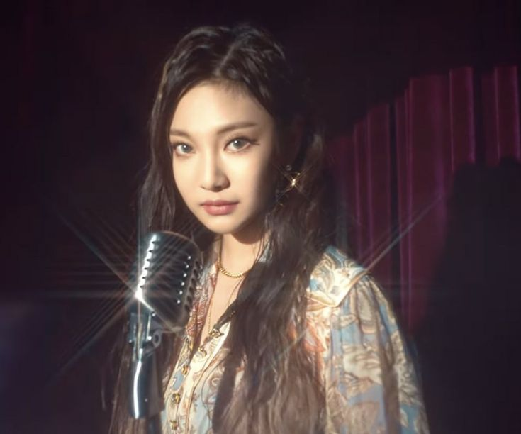
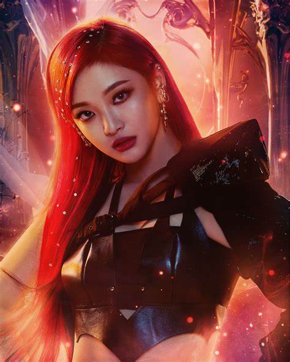

NINGNING (닝닝)
Ning Yi Zhuo (Chinese: 宁艺卓), also known by her stage name Ningning (Hangul: 닝닝), is a Chinese member of the South Korean girl group aespa.
CAREER
PRE DEBUT: SM ROOKIES
Ningning participated in many singing programs in China, that included China's Got Talent Season 2 in March 2011, China's New Sound Generation in July 2015, and the Harbin Silver Valley Fuxing Concert performing "Rolling in the Deep" By Adele on October 10, 2015. Ningning was recruited by an SM Entertainment staff after watching a video of her performance in 2016. On September 19, 2016, she was introduced as a member of S.M. Rookies, a pre-debut trainees team maintained by S.M. Entertainment. As part of it, she appeared on the Rookies Princess: Who's the Best? segment of the program My SMT in 2016, and recorded several covers for the Korean animated TV program Shining Star in 2017.
2020: AESPA DEBUT
On October 28, 2020, during a press conference, a video showing the final lineup of Aespa revealed Ningning to be a member. On the next day, Ningning was officially revealed by S.M. Entertainment as the third member of aespa.
Æ COUNTERPART
Æ-NINGNING
æ-Ningning (stylized as æ-ningning or æ-NINGNING) is a virtual member of aespa. She is the virtual counterpart to Ningning. æ-Ningning was revealed on November 9, 2020 in the video SYNK, NINGNING. Her and Ningning together are referred to as MY NINGNING.
TRIVIA
⁍ Education:
⁍ Harbin Normal University Affiliated High School (Graduated)
⁍ Beijing Contemporary Music Academy (CMA)
⁍ Special Ability: Making a loud voice
⁍ Nicknames: Ning Wang (King Ning), Ningningie, Ninggingie, Makningie (maknae+ningning), kitten, Ningie.
⁍ Favorite Word: Kkwabaegi (Korean twisted doughnuts)
⁍ Favorite Color: Violet. She also likes red, yellow and pink.
⁍ Favorite Season: Spring
⁍ Favorite Animals: Tiger, Cat
⁍ Favorite Food: Gamjatang (Korean pork bone soup), Soondaeguk (Korean blood sausage soup),
Hot Pot, and Butter Caramel Pringles
⁍ Favorite Movie: Titanic.
⁍ First impression of members:
⁍ Karina: long neck
⁍ Giselle: tall legs
⁍ Winter: like a hamster
⁍ Her favorite ride at the amusement park are the rollercoasters. Winter calls Ningning her
rollercoaster partner.
⁍ She loves art. She is known to be extremely artistic.
⁍ Her favorite character is Patrick Star from Spongebob Squarepants.
Because he is very nice to Spongebob.
⁍ She likes vintage and buying vintage clothes.
⁍ If she had to describe herself with one word it would be sexy.
⁍ Her childhood dream was to become a prince because they ride on horses and they are respected.
⁍ She can play the piano.
⁍ She is an only child.
⁍ She was the third member to be revealed.
⁍ She is the only SM Rookie to debut in the group, while other members were trainees.
⁍ She is the only female SM Rookie that debuted under SM Entertainment after the debut of Red Velvet.
⁍ She was the last member (boys and girls) of SM Rookies to graduate.
⁍ She is the first Chinese main vocalist in a KPop girl group.
⁍ In 2016 Red Velvet's Wendy called Ningning "The Goddess of Photoshoots."
⁍ She is a fan of Blackpink's Jennie and Rihanna.
⁍ She placed 43rd in TC Candler's 100 Most Beautiful Faces of 2020.
⁍ She was a contestant on China's Got Talent (S2) and Let's Sing Kids (S3).
⁍ Her English name is Vivian.
⁍ In 2021, she became the first member to dye her hair red for Next Level promotions.
⁍ She has the longest trainee period of all members, so others initially greeted her in
honorifics. Ningning, in turn, wasn't good at greeting or distinguishing between honorifics
and plain speech, so she accidentally greeted Giselle and Winter in plain speech.
⁍ She can do a split from having one foot already on a small table.
⁍ She dislikes ASMR.
⁍ She also feels uncomfortable borrowing clothes from others. Because she is
the clumsiest member and spilling drinks, she often stains them.
⁍ She also loses items many times, to the point that she'd imnediately buy a set
of replacements, even when the orginal items are founds within the day.
⁍ She can make faces without laughing. She once did that in their appearance in
Choi Hwa Jung's Power Time, where she made a face during break time before she saw a
camera making her embarrassed.
VIDEO
Aespa 에스파 - SYNK, NINGNING 

Birthname:
NING YIZHUO
(宁艺卓/寧藝卓) (Chinese)
Jeo Ye Tak/Nyeong Ye Tak (저예탁/녕예탁) (Korean)
Birthplace:
Harbin, Heilongjiang Province, China
Birthdate:
October 23, 2002 (age 19)
Height: 161 cm
Weight:
43 kg
Blood Type: O
Zodiac Sign: ♏ Scorpio
Nationality: Chinese
Occupation: Singer